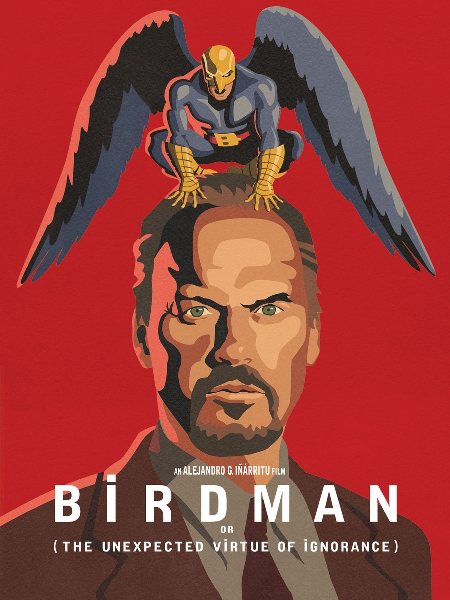
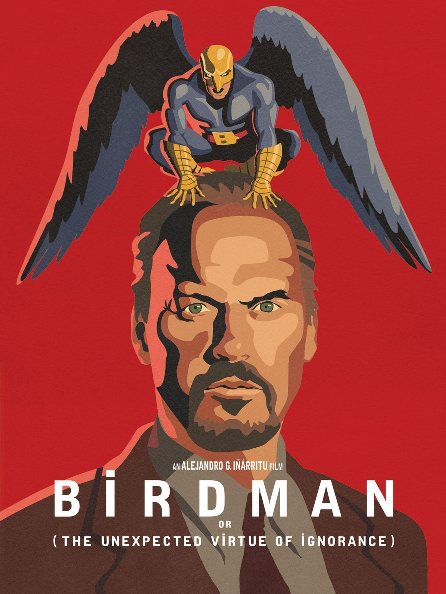
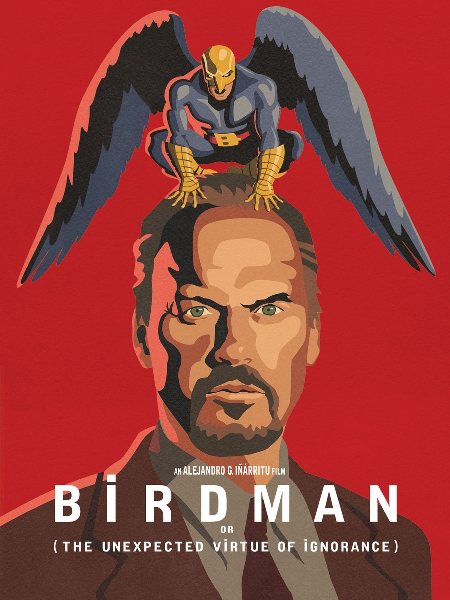

Peliculas favoritas
 

Porque el cine es un escapismo de la realidad; me introduce en una nueva y única, creada por el guionista y realizada por el director. En cada película se puede sentir la pasión con la que fue creada. Creo que incluso las peores películas tienen un cierto amor por la expresión artística, siempre he podido sentir ese ingrediente secreto que está oculto en cada fotograma.

hola